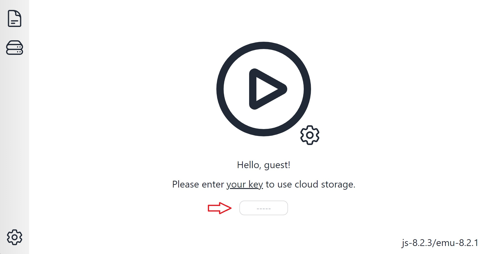

Cloud Saves
By default, js-dos stores game progress in the browser's indexed database. This data can be wiped at any moment by browser. You can avoid this problem using js-dos cloud saves.
To activate cloud services, you need to provide your secret key.
In the player's UI (type the key in the input):

Secret key
You can get secret key here
Learn more in our tutorial
01 апреля 2025